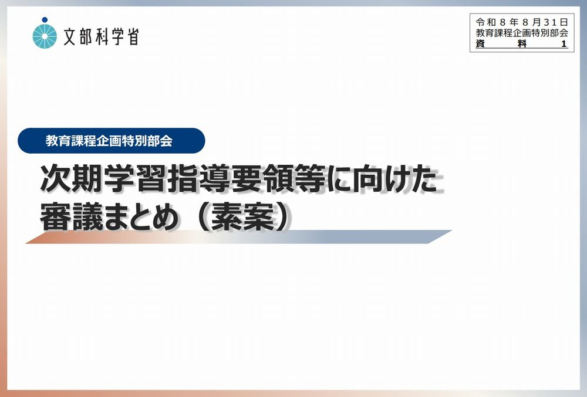
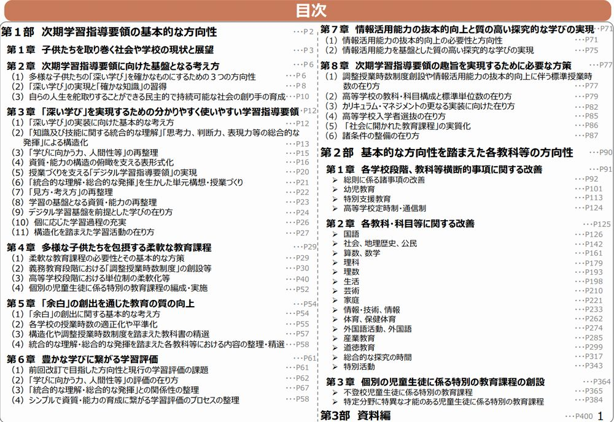

次期学習指導要領に向けた議論
中教審の資料から、現行の学習指導要領における課題と、今後の授業改善に関わる方向性を捉えます。
高校数学に求められる授業改善の視点
SECTION OVERVIEW
これまでの実践を基盤に、これから求められる学びと授業改善の方向性を考えます。
中教審の資料から、現行の学習指導要領における課題と、今後の授業改善に関わる方向性を捉えます。
Copilotとの対話を通して、現行の学習指導要領に示された課題と自身の授業を照らし合わせ、これまでの実践にある強みと、向き合いたい課題を捉えます。
これまでに培ってきた実践を土台に、それぞれの現在地から、小さくても足を止めずに授業改善を進めます。
REFERENCE
中央教育審議会の資料を参照しながら、これからの教育課程と高校数学に関わる論点を考えます。


手順①：Copilotを起動し、左上の「自動」から「Think Deeper」に変更する。
手順②：以下をコピーしてCopilotに貼り付け、実行する。
以下のURLで公開されているPDFの資料の内容に関して議論したい。内容を理解し、待機してください。 https://www.mext.go.jp/content/20260831-mxt_kyoiku01-000051893-3.pdf
PRACTICE
現行の学習指導要領に関する課題と自身の授業を照らし合わせます。
手順③：以下を、2ページ目で資料を読み込ませた同じチャットに貼り付けて実行します。
スライド13の「現行の学習指導要領の課題」や「課題を踏まえた方向性」に記載されている内容について、現在の自分の授業にも当てはまることがあるのではないかと考えています。 現行の学習指導要領の課題と自分の授業や授業づくりの考え方を比較できるような質問（アンケート）を作成し、私に問いかけてください。 アンケートは最大で10問とし、一度に質問を羅列するのではなく、1問1答形式で提示してください。私が1問に回答したら、その回答を簡潔に受け止めた上で、次の質問を提示してください。必要に応じて、前の回答を踏まえて次の質問の内容を調整してください。 すべての質問が終わった後、私の回答内容とスライド13の記載内容を照らし合わせ、私の授業や授業づくりの考え方について整理して提示してください。 整理する際は、課題だけを指摘するのではなく、最低限、次の項目を含めてください。 ・あなたの強み ・現行の学習指導要領の課題と重なる部分 ・授業や授業づくりにおける中心的な課題 ・改善の優先順位 ・現在の強みを生かした具体的な改善案 ・次の授業や単元から試すことができる、小さく実行可能な工夫 「あなたの強み」については、本人が意識的に行っている工夫だけでなく、回答の背景から読み取れる授業観、生徒への関わり方、教材研究、内容の構造化、評価、見取り、授業改善への姿勢など、様々な観点から具体的に示してください。 回答を単純に点数化して優劣を判断するのではなく、回答の背景や理由を丁寧に捉え、強みがどのような条件の下で課題として現れているのか、また、その強みをどのように改善に生かせるのかが分かるように整理してください。
現在の授業の様子を率直に回答します。
最大10問の対話後に示される整理を確認します。
留意点：正解を答える活動ではありません。
この演習のゴール：自分の実践の強みと、次に考えてみたい授業改善の視点を明らかにする。
SHARE
対話を通して整理された内容をFormsに入力し、参加者全体の傾向として共有します。
手順⑥：Copilotの出力をコピーする一問一答後に示された最終的な整理結果をコピーします。
手順⑦：Formsに回答して送信するMicrosoft Formsを開き、必要な項目を入力して送信します。
入力上の注意
学校名、生徒名など、個人や学校が特定される情報は入力しないでください。Copilotの出力に含まれる場合は削除してください。
Copilotの出力の扱い
授業を評価・診断する結果ではなく、実践を別の角度から捉える材料として扱います。
このFormsでは、氏名・メールアドレスなど、回答者個人のアカウント情報を取得しない設定とします。送信内容は個人を特定できない形で集約し、参加者全体の傾向として共有します。
REFLECTION & MESSAGE
皆さんの回答に見られた共通点を手掛かりに、それぞれの現在地から進める授業改善について考えます。
当日の集約結果を踏まえて共有
当日の集約結果を踏まえて共有
次期学習指導要領を、これまでとは異なる新しいことを一律に求めるものとして捉えるのではありません。
先生方が培ってきた実践や強みを生かし、それぞれが感じている課題から授業を見直していきます。
一度に大きく変える必要はありません。それぞれの現在地から、小さな授業改善のアクションを積み重ねていきます。
目の前の生徒の実態と、これからの社会で必要となる力の両方を踏まえ、育てたい生徒像を丁寧に捉えます。
これまでを否定して変えるのではなく、これまでを生かしながら、それぞれの現在地から改善を続ける。